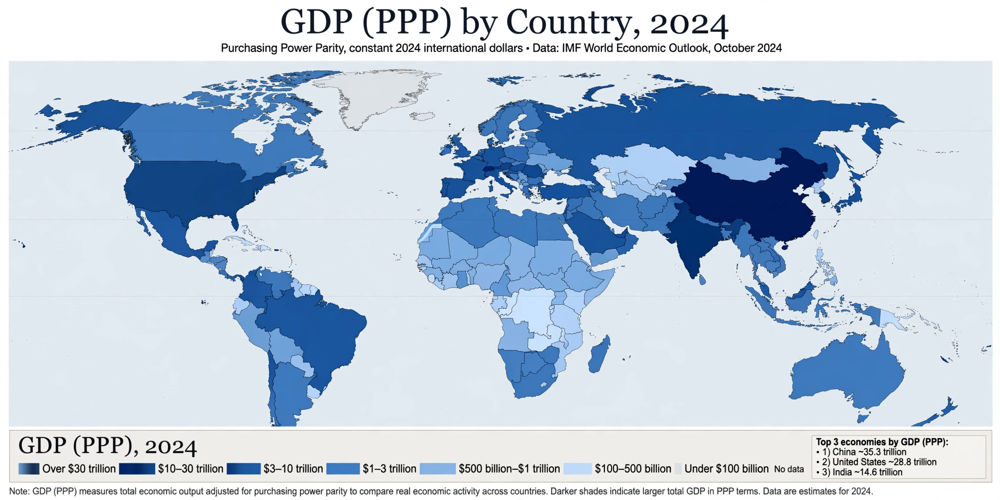

List of sovereign states by GDP (PPP)
From Wikipedia, the free encyclopedia

This list of countries by GDP (PPP) ranks sovereign states by gross domestic product measured at Purchasing power parity — which adjusts for national price differences, raising the measured output of lower-cost economies relative to market-exchange-rate comparisons. By the IMF's recent estimates, China is the world's largest economy by PPP (roughly US$35–40 trillion in international dollars), followed by the United States (~US$30 trillion), India, Japan and Germany; by PPP per capita, small rich states such as Luxembourg, Singapore and Ireland lead.
Methodology
PPP conversion uses price surveys (the International Comparison Program) to value all economies' output at a common price set, correcting the 'Penn effect' by which haircuts and housing cost more in rich countries. GDP (PPP) better reflects domestic living standards and real output volume; nominal GDP better reflects financial and trade weight. The IMF, World Bank and CIA publish rival estimates with slightly different rankings and vintages.
The ranking in outline
Total GDP (PPP), recent IMF estimates in round trillions of international dollars: China ~38, United States ~30, India ~16–17, Japan ~6.5, Germany ~6, Russia ~6–7, Indonesia ~5, Brazil ~4.8, France and the United Kingdom ~4.4 each. Per-capita leaders (excluding microstates and financial centres) include Singapore, Ireland, Switzerland, Norway and the United States (~US$85,000). Rankings shift with each data release.